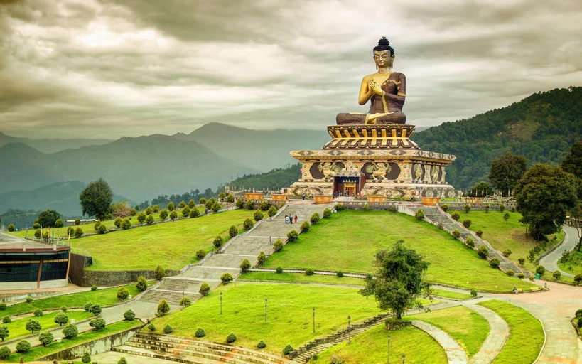
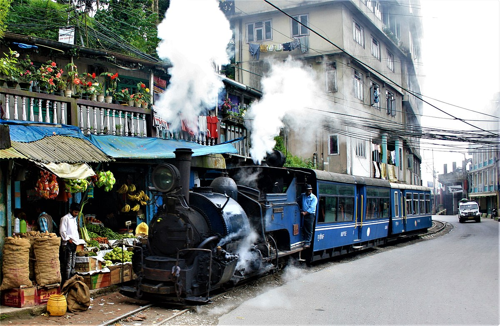
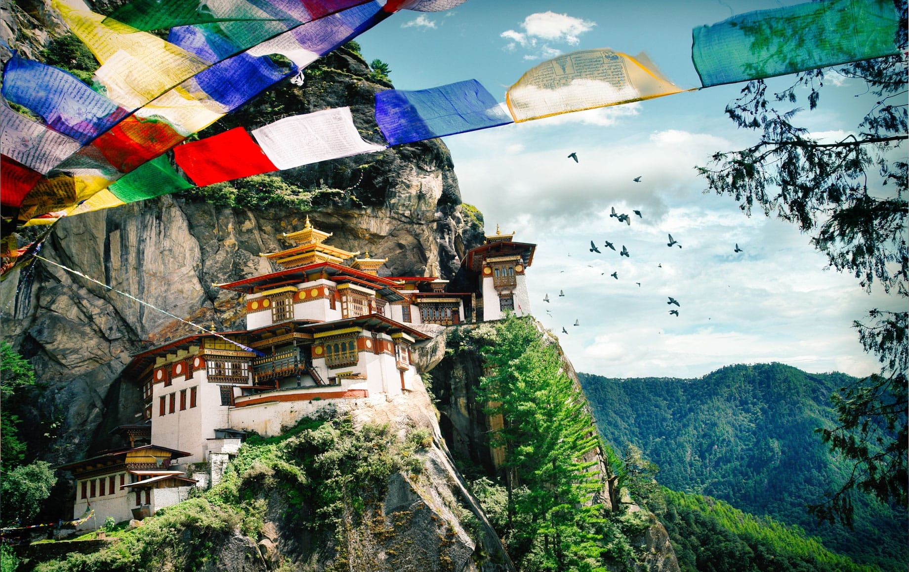
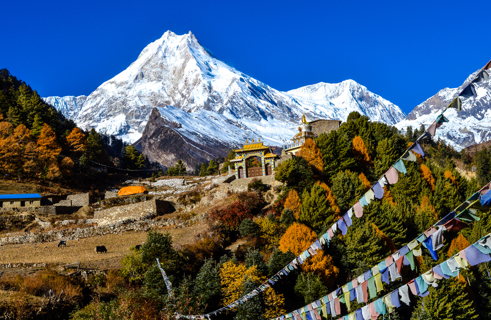

Enchanting Wonders of Sikkim
Sikkim offers breathtaking landscapes, rich culture, and adventure,
featuring highlights like Tsomgo Lake, Nathula Pass, Yumthang Valley,
and vibrant monasteries across its diverse regions.

-
Explore Diverse Landscapes: Sikkim features stunning natural
beauty, from the snow-capped peaks of Kanchenjunga to lush valleys
and glacial lakes like Tsomgo Lake.
-
Adventure Activities: Engage in thrilling activities like
trekking in Yumthang Valley, exploring the scenic trails of North
Sikkim, and visiting the historic Nathula Pass.
-
Serene Retreats: Discover peaceful towns like Lachung and
Pelling, known for their breathtaking views, tranquil atmosphere,
and opportunities for relaxation amidst nature.
-
Wildlife and Nature: Explore Khangchendzonga National Park, a
UNESCO World Heritage Site, home to diverse flora and fauna,
including rare species like snow leopards and musk deer.
Sikkim, a small yet stunning state in northeastern India, is renowned
for its breathtaking landscapes, rich biodiversity, and vibrant
culture, making it a paradise for nature lovers and adventure seekers.
Darjeeling : The Himalayan Retreat
Darjeeling, known for its breathtaking views, offers attractions like
Tiger Hill, Batasia Loop, and tea estates, along with rich cultural
experiences in vibrant monasteries and local markets.

-
Breathtaking Views: Experience stunning sunrise views from
Tiger Hill, showcasing the majestic Kanchenjunga peaks in vibrant
colors.
-
Heritage Railway: Ride the UNESCO-listed Darjeeling Himalayan
Railway, known as the "Toy Train," for a nostalgic journey through
picturesque landscapes.
-
Adventure Activities: Engage in thrilling activities like
river rafting on the Teesta River and trekking in Singalila National
Park, home to diverse flora and fauna.
-
Serene Monasteries: Discover tranquility at iconic
monasteries such as Bhutia Busty and Mahakal, offering spiritual
insights and panoramic views.
Darjeeling, known as the "Queen of the Hills," is a picturesque hill
station in West Bengal, India, famous for its stunning views of the
Kanchenjunga mountain range, lush tea gardens, and the historic
Darjeeling Himalayan Railway.
Bhutan: The Land of Thunder Dragons
Experience Bhutan's rich culture and stunning landscapes through
visits to iconic sites like the Tiger's Nest Monastery, Punakha Dzong,
and vibrant Thimphu, all set against the majestic Himalayas.

A tour of Bhutan offers a unique blend of breathtaking landscapes,
rich culture, and spiritual experiences. Begin your journey in Paro,
where you can visit the iconic Tiger's Nest Monastery, perched high on
a cliff and offering stunning views of the surrounding valleys.
Explore the historic Rinpung Dzong and Ta Dzong Museum to gain
insights into Bhutan's heritage. Travel to Thimphu, the capital, to
witness the vibrant mix of modernity and tradition, highlighted by the
majestic Buddha Dordenma statue and the National Memorial Chorten.
Venture to Punakha to marvel at the impressive Punakha Dzong, situated
at the confluence of two rivers. Throughout your trip, immerse
yourself in Bhutanese hospitality, savor local cuisine, and
participate in cultural activities, making your visit an unforgettable
experience in this enchanting Himalayan kingdom.
Bhutan is a remote Himalayan kingdom known for its stunning
landscapes, rich Buddhist culture, and commitment to preserving
traditions while embracing limited modernization.
Majestic Himalayas of Nepal
Nepal offers diverse experiences, from exploring vibrant Kathmandu and
serene Pokhara to trekking in the Himalayas and wildlife adventures in
Chitwan National Park, showcasing rich culture and stunning
landscapes.

Nepal offers a captivating blend of rich culture, stunning landscapes,
and adventure, making it a perfect travel destination. Begin your
journey in Kathmandu, where you can explore UNESCO World Heritage
Sites like the Pashupatinath Temple and Swayambhunath Stupa, immersing
yourself in the vibrant local culture. Next, venture to Pokhara, known
as the "Lake City," where breathtaking views of the Annapurna range
await. Enjoy activities such as boating on Phewa Lake and hiking to
Sarangkot for spectacular sunrises. Wildlife enthusiasts can
experience the diverse flora and fauna in Chitwan National Park, home
to Bengal tigers and one-horned rhinoceroses. The tour also includes
Lumbini, the birthplace of Buddha, offering spiritual insights. With
its charming villages, ancient temples, and majestic mountains, a tour
of Nepal promises unforgettable memories and a deeper appreciation for
this Himalayan gem.
Nepal, a landlocked country in South Asia, is renowned for its
stunning Himalayan landscapes, rich cultural heritage, and as the home
of Mount Everest, the world's highest peak.